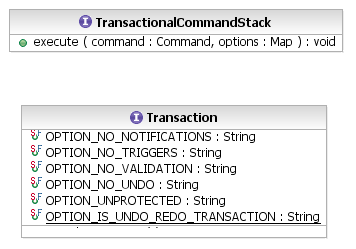

The TransactionalCommandStack.execute() method accepts a map of options defined by the Transaction interface that determine how changes occurring during the transaction are handled:
These options are all boolean-valued. They all default to false.

[as SVG]
Another option, OPTION_IS_UNDO_REDO_TRANSACTION is merely informative. It is applied by the transaction API, itself, to indicate to clients that a transaction's changes result from undo or redo of a Command. Listeners, on receiving notification of changes in the resource set, can look for this option if they need to distinguish between changes that occurred in the original execution of a command versus undo or redo of a command. It would be highly unual for a client of the transaction API to apply this option.
TransactionalCommandStack stack;
Library library;
// don't tell the UI that we are changing the library name
stack.execute(
SetCommand.create(domain, library,
EXTLibraryPackage.Literals.LIBRARY__NAME, "Secret Name"),
Collections.singletonMap(
Transaction.OPTION_NO_NOTIFICATIONS, Boolean.TRUE));
Most of these options apply only to read/write transactions. They have no effect on read-only transactions, except only the OPTION_NO_NOTIFICATIONS. Reading the resource set can cause such changes as proxy resolution and resource loading, which generate change events, although they do not indicate changes to the abstract state of the data.
The TransactionalCommandStack implementations of the undo() and redo() methods use the following options for the transactions created for undo and redo of commands: